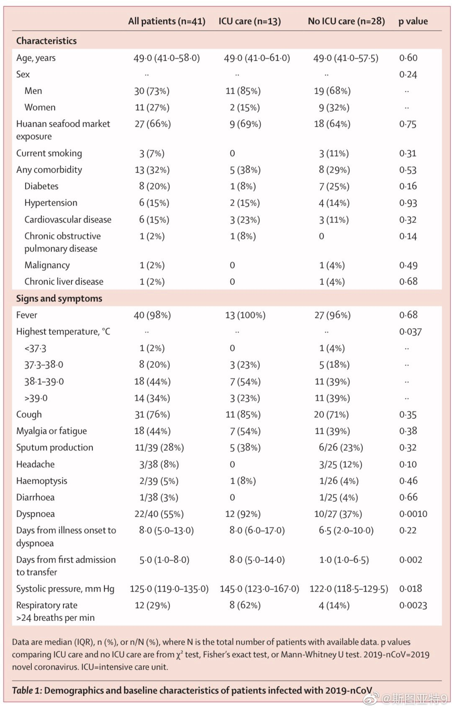

把刚才那篇说新型肺炎主要症状是咳嗽的微博删了。刚看到有人转的柳叶刀专题那篇分析去年武汉肺炎早期病例的文章： 网页链接 。看起来，发烧还是绝大多数（41个病例里的40个），而咳嗽的只有76%。所以最需要注意的还是发烧，也要注意咳嗽。 
综合了多方信息，对于疫区以外的人，预防新型肺炎最重要的还是老生常谈的话：多洗手，用正确的方法洗手；勤清洁桌面把手等手能摸到的地方，特别是公共场所；尽量与人保持三米以外的安全距离，避开与咳嗽、打喷嚏的人过近接触。口罩是亚洲特色，欧美疾病防治中心几乎不把口罩列为日常预防措施之一。当然也许和亚洲人口太稠密有关？
 网页链接 。看起来，发烧还是绝大多数（41个病例里的40个），而咳嗽的只有76%。所以最需要注意的还是发烧，也要注意咳嗽。
网页链接 。看起来，发烧还是绝大多数（41个病例里的40个），而咳嗽的只有76%。所以最需要注意的还是发烧，也要注意咳嗽。